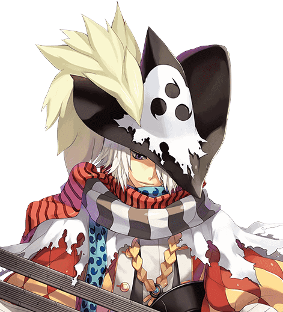

Lua de Fogo
Numa noite em que a chuva caía em cascata pelas ruas de paralelepípedo, Link adentrou o bar enfumaçado com a mesma confiança de sempre. Seus olhos escuros examinavam o ambiente, capturando cada detalhe enquanto ele se aproximava do balcão, determinado a encontrar seu alvo.
Com seu chapéu triangular que cobria parte do rosto e seu manto por cima de uma roupa totalmente preta que claramente escondia algo por baixo dos panos, Link se senta no balcão do bar e olha para os lados onde via pessoas bebendo e se divertindo, e alguns bardos que tocavam musicas estranhamente conhecidas por ele.

Antes que pudesse articular uma palavra, uma mão áspera agarrou seu ombro por trás. Link girou rapidamente, sua mão já alcançando a empunhadura de sua espada, mas antes que pudesse puxá-la, foi confrontado por um homem robusto, vestido com as vestes gastas de um dos donos do estabelecimento.
-”O que pensa que está fazendo aqui, estranho?" rugiu o homem, sua voz carregada de desconfiança e hostilidade. Os bardos pararam de tocar, e o silêncio tomou o local. Link manteve sua expressão impassível, mas sua mão não abandonou o punho da espada.
-"Estou apenas de passagem, buscando informações sobre um certo indivíduo. Nada que deva preocupá-lo."
Os olhos do dono do bar estreitaram-se, um sorriso sinistro brincando em seus lábios.
-"Aqui, estranhos como você não são bem-vindos, a menos que tenham algo a oferecer em troca."
Antes que Link pudesse responder, uma tensão elétrica preencheu o ar quando os frequentadores do bar começaram a se aglomerar ao redor deles, uma mistura de olhares curiosos e hostis. Link percebeu que estava cercado, mas não recuou.
Com um movimento rápido como um raio, o dono do bar brandiu uma faca, e a luta irrompeu em uma dança frenética de aço e fúria. Link se defendia habilmente contra os ataques dos frequentadores do bar, sua espada cortando o ar com precisão mortal enquanto ele lutava para abrir caminho através da multidão.
Mesmo se esquivando e fugindo de alguns ataques, Link consegue perceber uma Sombra, uma figura de manto escuro saindo pela porta, algo que só de ver lhe causou um certo calafrio. Então já cansado de fugir sem revidar, Link tira um pergaminho de baixo de seu manto e vestes escuras, e o arremessa ao chão e a cada centímetro de pergaminho que vai se abrindo, é possível ver as letras de escrituras antigas de tinta preta começando a brilhar em tom dourado, e logo em seguida com sua espada, Link faz um corte rápido no pergaminho que ainda se abre no chão, seguido de uma palavra
-”Shine”
Em um piscar de olhos o pergaminho por inteiro explode e um incêndio se propaga rapidamente no bar, todos se desesperam pra tentar se salvar e Link guarda sua espada se dirigindo rapidamente pelos fundos, enquanto viu pela janela um imenso clarão de trovões.
Ao se distanciar dali conseguia ver o vulto de uma sombra com silhueta feminina e longos cabelos pelos telhados observando a lua e os estranhos trovões, juntamente com a fumaça do incêndio que ele mesmo havia causado.